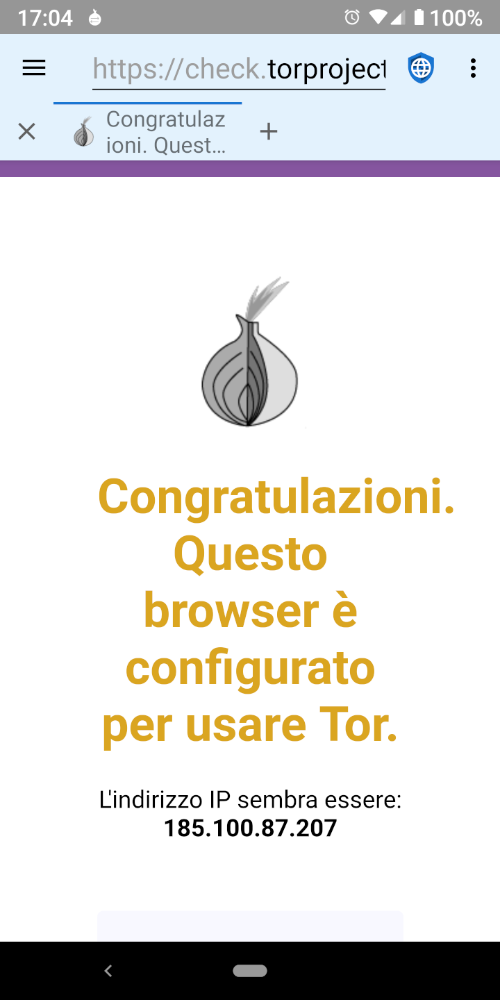

Proxies and Their Limits Proxies and Their Limits
Proxies and Their Limits Proxies and Their LimitsEsistono due categorie generali di cattivi soggetti che vogliono violare la privacy del web: governi maliziosi con accesso agli ISP (Internet Service Providers) e mega corporations che gestiscono social network e agenzie pubblicitarie. Proxies like TOR (The Onion Router) and I2P (the Invisible Internet Project) are useful in protecting privacy from malicious governments (which spy on traffic in transit) but not from mega corporations (which embed malicious code on web servers).
 Governi Maliziosi
Governi MaliziosiI governi malizionsi spesso spiano i loro cittadini per punire il dissenso o le attività di difesa dei diritti umani. Solitamente, o gestiscono loro stessi gli ISP locali oppure li obbligano a rivelare informazioni mostrando tutti gli indirizzi IP visitati da ciascun utente. Layered proxies are designed to defeat this infringement of privacy by encrypting the traffic from a user’s device and routing it through multiple servers on the internet before sending it on to the final destination. This means that no individual ISP, server, or website, can know both the IP address of the user’s device and the IP address of the final web server. Malicious governments and the ISPs they control cannot tell which web servers a user is accessing, although they can tell that the user is using a layered proxy service. In some parts of the world, using proxies could be construed as an evidence of illegal behavior (“If you didn’t have anything to hide you wouldn’t be encrypting your traffic”) and users could be punished because governments assume they are doing something that is prohibited. Thus, proxies can be helpful, but they aren’t a panacea.
Mega corporationsQuando un utente si connette a un web server, il server può vedere l'indirizzo IP dell'utente. Nonostante non sia una scienza esatta, è possibile convertire l'IP in indirizzi fisici con discreta accuratezza. Small web servers typically rely on IP addresses to identify the location of the users visiting their site. Proxies are a good solution to mask the user’s location from these servers. Le mega corporations proprietarie di social media e agenzie pubblicitarie utilizzano però un intero profilo di informazioni con lo scopo di tracciare gli utenti sui dispositivi e sgli indirizzi IP. Questi profili utilizzano molte tecniche diverse per l'identificazione degli utenti, tra cui JavaScript, cookie, ID traccianti, e impronta digitale dei browser. Siccome la maggior parte dei siti web carica gli annunci da una delle principali agenzie o inserisce le icone dei social media e i relativi javascript, costruiscono profili per quasi tutti gli utenti e possono tracciare la loro attività su internet anche se relativa a altri siti.
Viene tracciato ogni sito visitato, ogni acquisto effettuato, ogni carta di credito utilizzata, ogni indirizzo di spedizione, i metadati GPS di ogni immagine che viene caricata su internet. Viene costruito il profilo per età, sesso, stato civile, indirizzo, appartenenza politica, religione, situazione familiare, animali domestici, e tutto ciò su cui possono mettere le mani. Le corporations acquistano anche i database delle transazioni con carta di credito effettuate nei negozi, per poter tracciare anche le abitudini di acquisto off-line degli utenti nei loro profili. Because they already have much more accurate address information about a user than an IP address discloses, proxies provides no real privacy protection against mega corporations.
La miglior protezione per la privacy contro le mega corporations è quella di navigare con JavaScript disabilitato, seguita dal bloccare gli annunci pubblicitari, disabilitare i cookie e il DOM storage, e utilizzare un browser di cui è difficile avere l'impronta digitale.
Despite their limitations, proxies can be useful in some circumstances. Tor and I2p have Android apps that make it easy to use their proxy networks. When proxying is turned on in Privacy Browser, the app bar will have a light blue background instead of the default light grey. Because traffic is being routed through several proxy nodes, using a layered proxy is often much slower than connecting directly to the internet.
 Download di File con Tor
Download di File con TorWhen Orbot is operating in proxy mode, browsing the internet using Privacy Browser will be routed through the proxy, but file downloads will not. This is because Privacy Browser uses Android’s builtin download manager to download files, which doesn’t have a proxy option. Users who want to download files via Orbot need to enable its VPN mode. There is currently no way to download files through I2P.